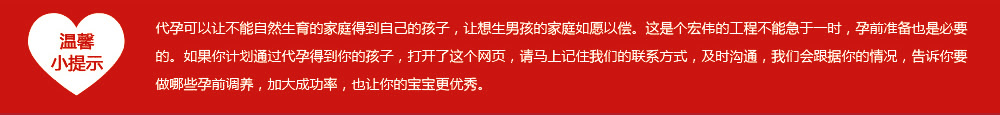

有充足的准备 才可以离孩子越来越近
2016-02-24 作者::未填写 来源未填写
导读： 1.女性人工受精的准备工作 （1）生殖系统检查 （2）监测排卵
2.男性人工授精的准备工作
（1）收集精液前应禁欲3-5天，节制抽烟、饮酒及避免有可能对精子伤害的药物。
（2）通常采用手淫法收集，不射精症者手淫法不行时，可用电按摩器采集精液。
（3）逆行射精的患者，先排空膀胱，再用无菌生理盐水冲洗膀胱，最后在膀胱内注入少量的精子培养液或其他对精子无害的液体。手淫或性交射精后立即排尿或导尿，取得精液后作离心和洗涤处理再进行人工授精。
（4）精液量及精子数少的患者，可采集几次精液加以浓缩后进行人工授精。

新闻中心